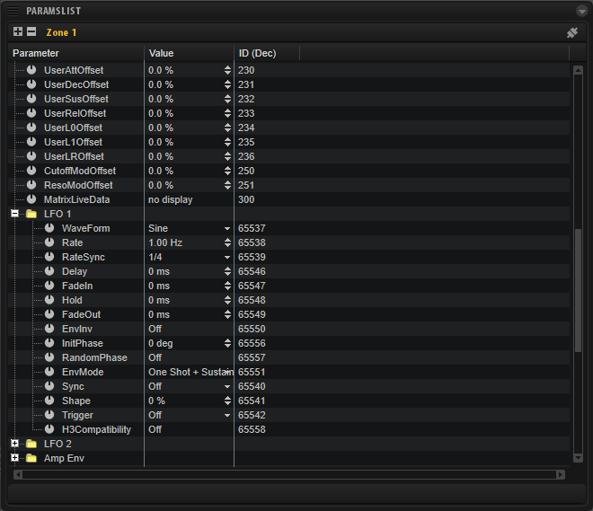

/ HALion Developer Resource / HALion Script / Diving Deeper /
Working with Parameters
On this page:
Properties of Parameters
Every parameter has a ParameterDefinition object that describes the properties of a parameter. For example, you can retrieve the minimum, maximum, or default value of a parameter by reading the corresponding fields of the ParameterDefinition object (see getParameterDefinition for details). The fields of the ParameterDefinition object can only be read and not be modified.
The actual value of a parameter is not part of the ParameterDefinition object. It can be modified using the functions getParameter and setParameter or getParameterNormalized and setParameterNormalized.
Addressing Parameters
Functions like getParameter, setParameter or getParameterDefinition address the desired parameter by its name or ID.
Addressing Parameters by Name
Please do not mix up the parameter's label on the UI with its name in the engine. Sometimes, the label and the name of a parameter are the same, but most of the time they are different.
❕ Throughout this documentation "name of parameter..." refers to its name in the engine and not its label on the UI.
The name of a parameter can be found in HALion's Parameter List. The Parameter List gives you a detailed overview of the parameters of the currently selected element in the Program Tree. The following screenshot shows parts of the parameters of a zone.

The Parameter column lists the names of the parameters. Parameters that belong together can be grouped into functional sections, represented by the folders in the Parameter column.
- Parameters that do not belong to a section can be addressed directly. In the screenshot above, "UserAttOffset" addresses the attack offset of the user envelope in the zone, for example.
- Parameters that belong to a section need the name of the section as prefix, for example, the shape parameter of LFO 1 in the zone has the name "LFO 1.Shape".
Example 1
function onLoadIntoSlot()
local zones = this.program:findZones(true)
if zones[1] then
print("LFO 1.Shape: "..tostring(zones[1]:hasParameter("LFO 1.Shape")))
print("lfo 1.shape: "..tostring(zones[1]:hasParameter("lfo 1.shape")))
end
end
❕ Addressing a parameter by its name is case sensitive.
Addressing Parameters by ID
The ID of a parameter can also be found in the Parameter List. By default, the Parameter List does not show the ID.
- To add the ID column to the Parameter List, right-click a column header and select ID (Dec).
The ID of "LFO 1.Shape" is 65542, for example.
Example 2
local lfo1ShapeID = 65542
function onLoadIntoSlot()
local zones = this.program:findZones(true)
if zones[1] then
print("LFO 1.Shape: "..tostring(zones[1]:hasParameter(lfo1ShapeID)))
end
end
Addressing parameters by name needs more computing time and might be a disadvantage for timing critical scripts. To optimize your script, you can read the ID of a parameter with getParameterDefinition during the initialization of the script and use this instead.
Example 3
-- Read the ID of the parent layer's level parameter.
local paramID = this.parent:getParameterDefinition("Level").id
-- Print the value of the parent layer's level parameter with each note-on.
function onNote(event)
postEvent(event)
print("Level = "..this.parent:getParameter(paramID))
end
Using setParameter
The functions setParameter and setParameterNormalized address parameters also by name or ID.
Example 4
-- Set the value of the Level parameter of the parent layer.
function onLoadIntoSlot()
this.parent:setParameter("Level", 0) -- set via name
this.parent:setParameter(38, 0) -- set via ID
end